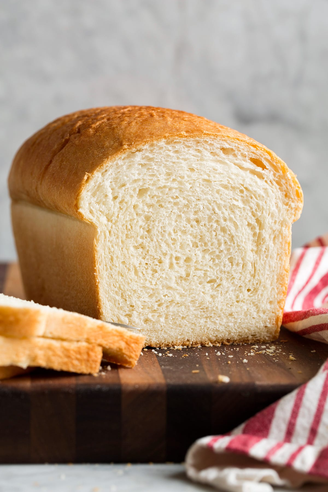

Basic Bread

Easy Beginner Bread Recipe
Ingredients
- 1 package (1/4 ounce) active dry yeast
- 3 tablespoons and 1/2 teaspoon sugar
- 2-1/4 cups warm water (110 degrees to 115 degrees F
- 1 tablespoon salt
- 6-1/4 to 6-3/4 cups of bread flour
- 2 tablespoons canola oil
Directions
- In a large bowl, dissolve yeast and 1/2 teaspoon sugar in warm water; let stand until bubbles form on surface
- Whisk together remaining 3 tablespoons sugar, salt and 3 cups flour.
- Stir oil into yeast mixture; pour into flour mixture and beat until smooth
- Stir in enough remaining flour, 1/2 cup at a time, to form a soft dough.
- Turn onto a floured surface; knead until smooth and elastic, 8-10 minutes.
- Place in a greased bowl, turning once to grease the top.
- Cover and let rise in a warm place until doubled, 1-1/2 to 2 hours.
- Punch dough down. Turn onto a lightly floured surface; divide dough in half. Shape each into a loaf.
- Place in 2 greased 9x5-in. loaf pans. Cover and let rise until doubled, 1 to 1-1/2 hours.
- Bake at 375° until golden brown and bread sounds hollow when tapped or has reached an internal temperature of 200°, 30-35 minutes. Remove from pans to wire racks to cool.
Home
Source for recipe